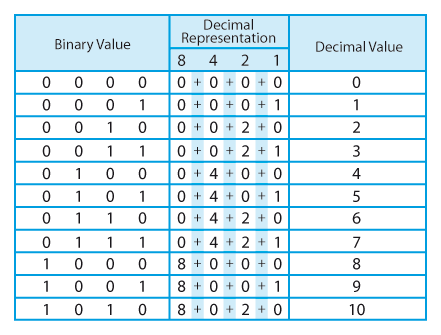
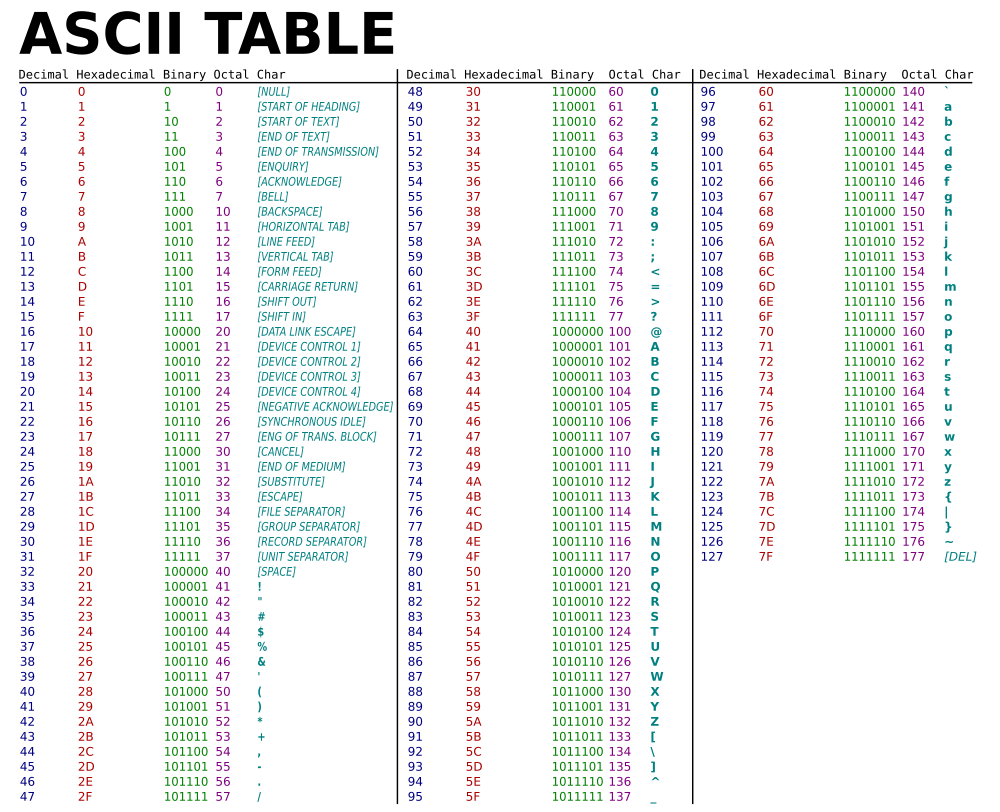
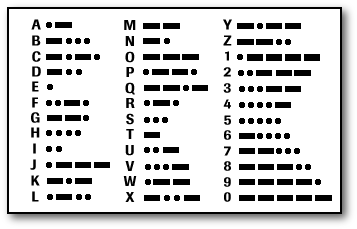
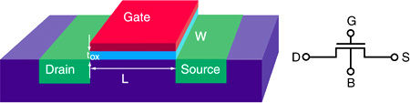
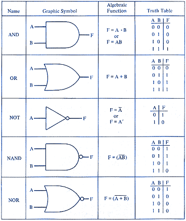

The binary number system is not only the foundation of Computer Science, but also of digital electronics in general.
The number system we are taught in school is the decimal number system, which are sets of ten, 0 to 9. To add a value after 9, we move to the next column and start using two symbols like 10.
Binary does the same thing, but only has two values, 1 and 0 so when it wants to represent more than one, it moves to the next column by using two symbols like 10. This shows how you can get many values from just 1 and 0, which can be used to represent on and off states of electricity.

By using just two states in a bit, then chaining the bits together, we can represent all of the characters in the english language and all of the numbers in the decimal number system in using just 8 bits. Chain a few more bits together and we can represent Red Green Blue values to make all the colors we can see or representing the changes over time in air pressure for all of the sounds that we can hear from a speaker.

A computer does everything in binary, a two state (1 or 0, on or off) number system. Everything else is represented by a code. This ASCII table was the most successful type of encoding the latin character and arabic numeral sets, until much later when Unicode extended ASCII to include all the character sets of the worlds major languages.
The processor can move data like this ASCII table to and from memory and storage using machine instructions, and keeps track of it all using address tables.
Application program code gets translated into 1s and 0s by the compiler into sets of machine instructions, also known as operation code (opcode) that the processor can understand, which is based on its instruction set architecture (ISA). When Processors have different opcode or ISA, we say they are a different platform. Most programs will only work correctly on the platform they were programmed to run on, unless there is a translation layer that changes the code to match the Platform. Languages like Java became popular because the allow a program to run across multiple types of platforms, by using a translation layer called a virtual machine.
Data codes like ASCII were created so that data could move between different platforms and still be understood.
Everything you experience on your system, colors, sounds, movies, games, are all translated binary signals like this ASCII table. Colors are translated using a Color Lookup Table, organized into pallets of colors and sent to your video display. Sounds are converted into analog signals using a table in a digital-to-analog converter (DAC) and sent to your speakers.
Audio signals picked up by a microphone or or video signals picked up by a camera are converted into a stream of discrete numbers, representing the changes over time in air pressure for audio, and chroma and luminance values for video.

Binary is very useful in electronics because we can turn electical power on and off very quickly using a switch. Like the dot-dash of the telegraph, or ship to ship communication using a signal lamp, computers turn power on and off quickly using transistors.
Transistors can open or close a circuit, turning power on an off like a light switch does. Instead of using your finger to flick a switch, transistors use a second power line to open or close the circuit. This second power line connects to a semiconductor material that is sandwiched between the ends of the first circuit.
When the semiconductor gets no power, it insulates or stops the current in the first circuit. As soon as it gets power from the second circuit, it conducts or starts the first circuit again.

Because of how the semiconductor can open or close a circuit, it is referred to as a gate.

Combinding these gates in particular patterns, we can represent the various states of logic from a boolean algebra table. These boolean value gates are called Logic Gates.
Combinding these Logic Gates together in specific ways we can make an adder. By connecting adders together with a carry over line, we make what is known as a full adder. Full adders are used to add binary digits (bits) together. Connect this with a form of memory and we have the beginnings of a computer.